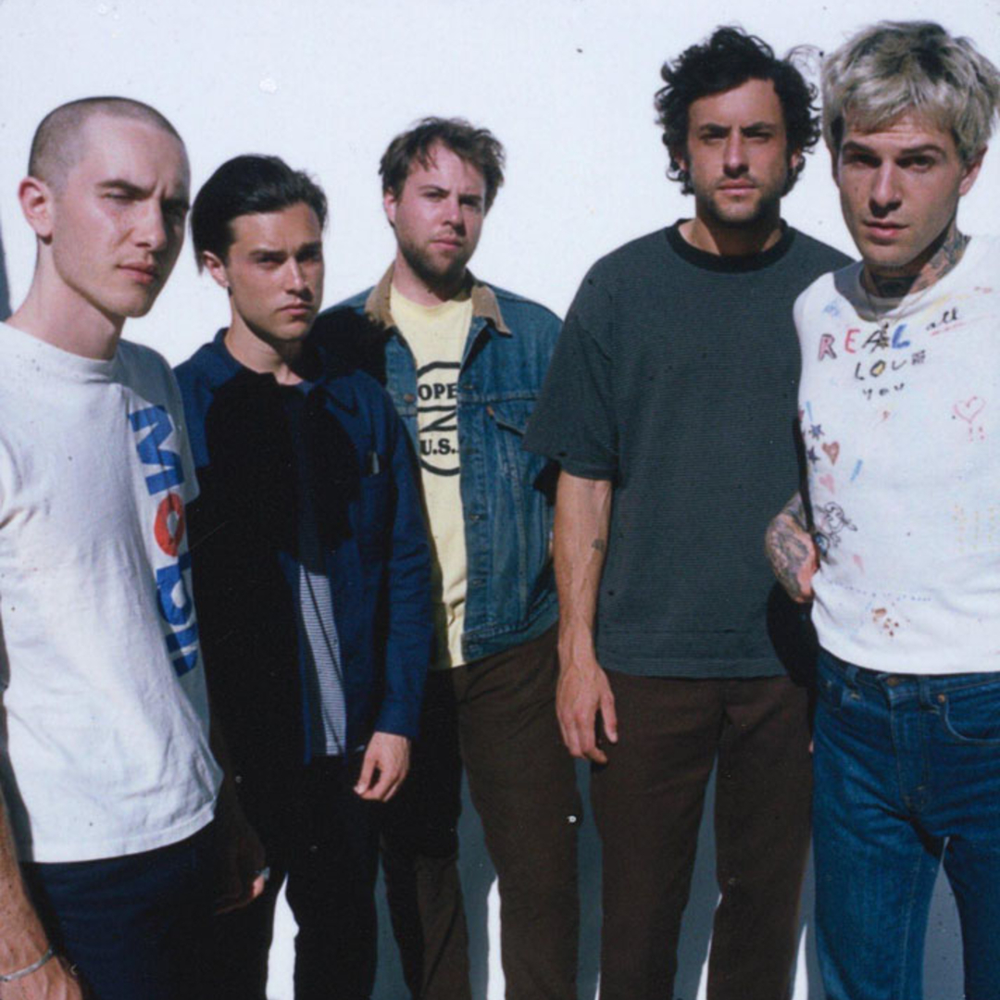

¿Sabes por qué hice esta página? Primero, quiero hacerte recordar algo. El día que dije que estaba interesado, estaba mintiendo, porque no era interés, sino que me gustabas. Y es por eso que ultimamente al verte actuaba extraño y distante porque no sabia que hacer, disuclpa si te llego a incomodar o molestar mis actitutes. Además como ya es 14 de febrero, decidí hacerte esta página web, la cual siempre tendrás, porque, a menos que no tengas señal, el internet mundial caiga o haya una catástrofe mundial, la tendrás ahí siempre.
Maybe quieres saber por qué me empezaste a gustar, y si no, no importa, es mi página web, así que hago lo que yo quiera. Todos dirán lo típico de "eres hermosa, inteligente, carismática y con un buen toque de humor", que ojo, pienso igual y nunca dudes de eso. Si alguien te dice lo contrario, es un pendejo.
1.Me gusta tu forma de vestir, eso me llamó la atención.
2.Eres una persona con la cual se puede conversar de todo.
3.Tenemos gustos bastante similares, creo que tenemos más en común de lo que creemos.
4.Me enseñaste a que no hay que huir al primer problema, sino a querer arreglar las cosas.
5.El labial rojo te queda muy bien, te queda di-vi-no. AKSJAKJ.
6.Creo,que tenemos buena química.Es extraño porque es como fluir contigo, no tengo la necesidad de ser alguien más o fingir algo.
Y podría seguir, ¿no? Pero si no, no acabaría nunca. Aunque a veces te rayas y se te zafa un tornillo, un tornillo grande, por cierto. Aun con tus imperfecciones, en ti encontré algo que me hizo decir: "You are flawless", y me das ganas de mejorar.
Me encariñé mucho contigo. I wanna be yours, sin importar el cómo ni el qué, y yo lo daría todo por ti, Die for You. Pero la verdad es que se me hace muy difícil. Para ser sincero, no pensé que te escribiría otra carta… y creo que esta será la última. Te escribí mi primera y mi última, porque dudo que vuelva a hacer algo así.
Te pido perdón porque he confundido las cosas y haber arruinado nuestra relación de amistad de esta manera. A que no te lo esperabas, ¿no? jaksj. También te pido disculpas por todos los problemas que te causé, y sí, fueron varios, sin duda. No sé qué más decir.
Y bueno, sé que lo que diré será un giro completo, porque precisamente por todo lo que mencioné antes, pero para mi bienestar es necesario alejarme y tomar distancia, cortar el contacto completamente. No es por orgullo ni por enojo, sino porque tenerte cerca es un recordatorio constante de que no puedo estar contigo, y eso me hace daño.

Para que me entiendas, lo que me haces sentir es como vivir dentro de Afraid y Nervous de The Neighbourhood, Friends de Chase Atlantic, Committed de Rauw, As you are de The Weeknd y Do I Wanna Know? de Arctic Monkeys.Para mí, siempre serás mi baile inolvidable, no solo del 2024, sino para siempre...
Siempre te tendré conmigo porque me robé tus gustos musicales. Firme que tanto Chase Atlantic como The Neighbourhood son buenas bandas; no me arrepiento de haberlas escuchado por ti, porque cada vez que escuche esas bandas, te pensaré y estarás conmigo ahí, aunque ya no estés. Como en Fallen Star: "You are in my DNA" y "You are always in my brain".
No me parecería justo simplemente desaparecer sin decir nada. Quizás sea algo mío, pero siempre he sido una persona responsable afectivamente, y me gusta expresar lo que siento. Recuerdo que, si alguna vez me iba o me alejaba, te dije que te diría todo lo que tenía que decir. Nunca pensé que llegaría el momento de hacerlo contigo.
Si algún día necesitas algo, I am right here. Sabes quiénes son mis amigos, dónde ando por la U, tienes mi número y mi IG. Siempre será un placer ayudarte o simplemente hablar contigo. Puede que no tenga todas las soluciones, pero daré mi 100% y más para ayudarte.
Esto no es un adiós definitivo, es un hasta luego. Sé que en algún momento del futuro nos encontraremos otra vez. Te deseo mucho éxito en todo lo que hagas; espero que cumplas todo lo que te propongas y alcances las metas que me mencionaste. Sé que lo lograrás, eres una chica capaz de todo. Estoy orgulloso de ti, siempre lo estaré. Sin duda, me será imposible amar de nuevo, porque no podré encontrar a nadie como tú.